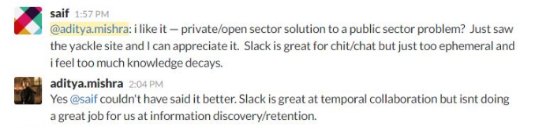
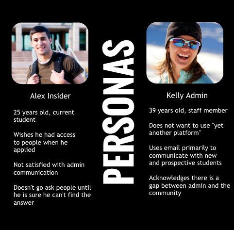
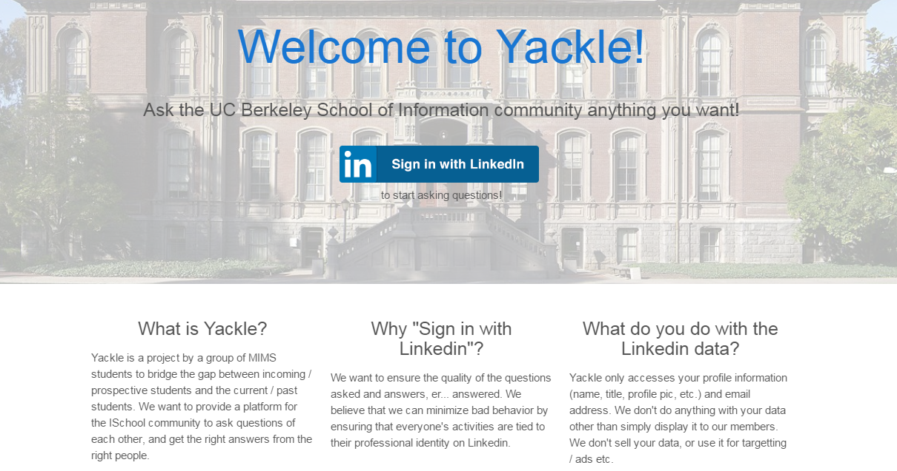
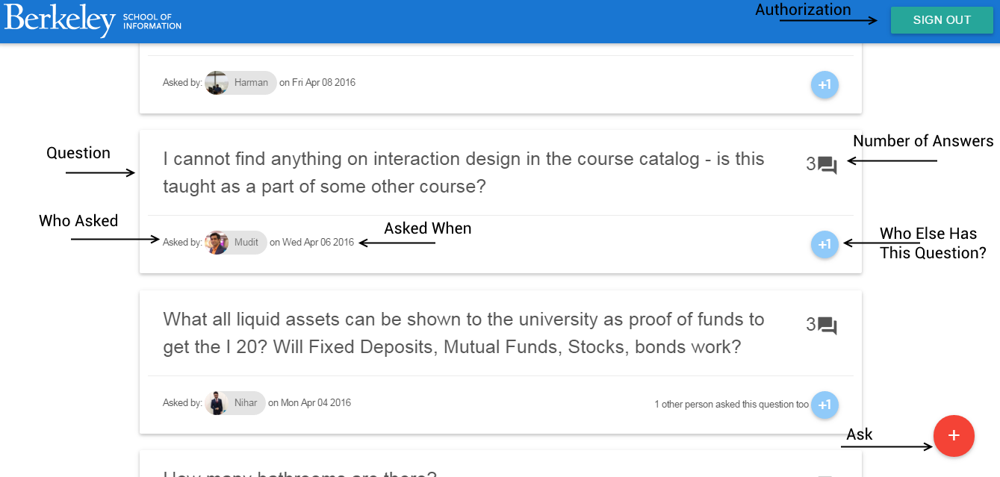
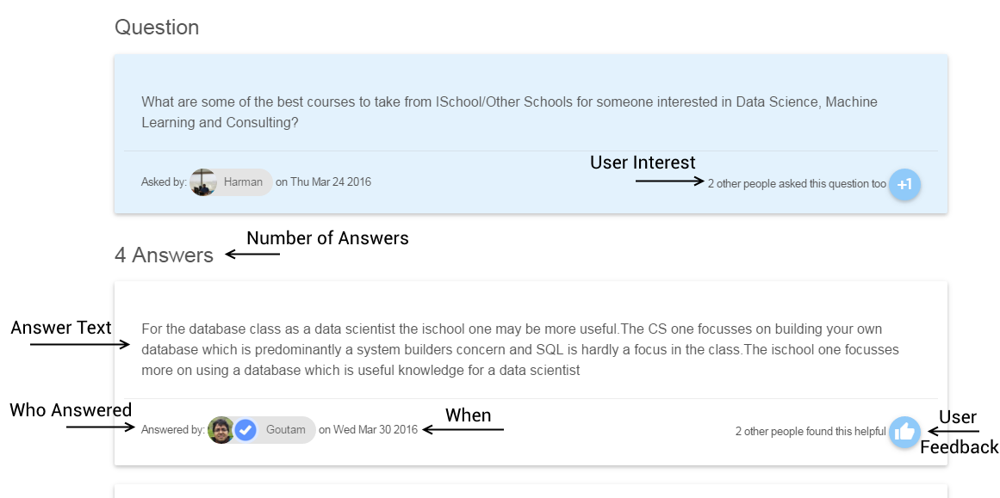
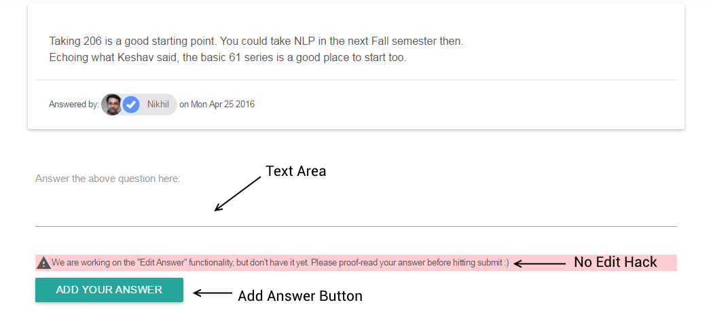
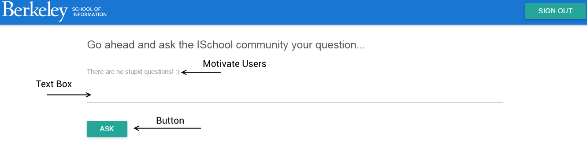
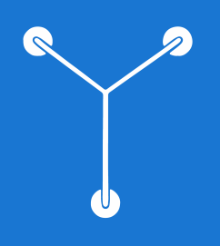

Helping communities share and grow their knowledge.
Problem
There are no trustworthy platforms for members of academic communities to share their knowledge within their communities and outside the community. People at our school are using ill-equipped communication tools for knowledge management. As a result, they end up losing vital information and often seek answers for questions that have already been answered.
What Is It?
We built a private Q&A tool where people can ask questions to trusted communities, privately or publicly. You can try it here. Right now, we have 106 users (including incoming students, current students, alumni and admin staff) engaging with the website. 106 might seem like a small number but the school itself has only roughly 150 people. Here's some social validation:

Inspiration
We looked at popular online communities that had knowledge management features like Reddit, ProductHunt, Quora. However, most of these communities deal with public communities. As a result, the discussion is more general and often threading is necessary. In our case as we were looking at a small private community, we chose to present a simple question and answer view.
Understanding Users
The initial research was carried out by the product manager through interviews with students and staff. We created two sample personas (1 student, 1 staff) and focused on one (student) for our first iteration.

User Needs
From the initial research the main user need identified was that: Users need assurance that the information they are getting is from a credible source. For this purpose, we designed 3 features.
Welcome to Yackle.

Inside Look
The sign up page uses LinkedIn OAuth. We wanted to tie users to their professional identity as a mechanism to encourage them to provide credible information. For this reason, on user profiles, we also display a blue tick mark. After usability testing, we added copy to inform users why we require them to log in using LinkedIn and what we do with their data.

The main view is different questions asked by community members. The main UI elements are highlighted. The +1 Button is another feature that promotes credibility. It tells users that their peers have the same question. This also motivates answer providers to answer high demand questions.

When a user clicks on a question, they see the individual question and answers. Feedback button is also important for promoting credibility. It shows the number of users who found an answer helpful.

The user can add their own answer here. We added a small line (the "no edit hack" above) to promote more mindfulness while answering.

If a user clicks on the ask button on the home page they see this screen. We kept this page very simple to avoid distractions.
Improving the Product
I carried out user research (interviews, usability testing, card sort) to identify short term fixes and long term improvements. I also manually emailed our users to simulate notifications and ensure that they were engaged.
Branding
I also designed a logo. The Y is designed to resemble the flux capacitor from Back to the Future. This was a conscious choice to emphasize the aspirations of the product and as a delightful element for keen users. Indeed, a few users who spotted the resemblance were happily surprised.

Roadmap
Insights from the summative research I conducted help us prioritize the items on our roadmap. Eg. We found out that we need to Improve Discovery [by providing Search or other Discovery mechanism], Improve Engagement [using Automated Notifications, Feeds], allow users to target questions at subject matter experts. For the long term, we want to drive wider adoption and scale the system to handle several communities.
If you are a member of the Berkeley I School community, I would encourage you to sign up at Yackle and give us feedback.
To Summarize
In my career, I look forward to owning experiences for products. This was a great experience working on a product end to end and being responsible not just for the user experience but also for the overall decision making process.
Prev
Close
Next